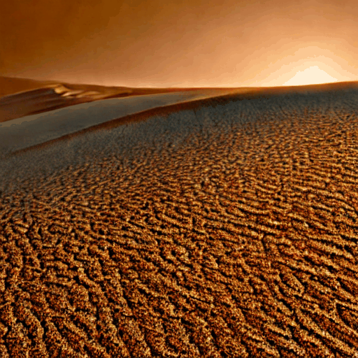
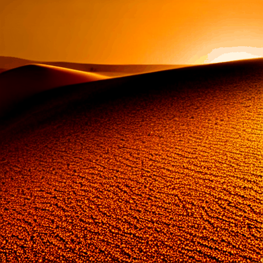

01
Desert Storm
Prompt sweeping desert sandstorm at sunset, dunes and swirling ochre dust, Sahara, golden hour, cinematic 4K
Negative blurry, low quality, text, people, faces · Seed 101
Negative blurry, low quality, text, people, faces · Seed 101
Standard 25 steps · PNDM ~240 s

⚡ Lightning 25 steps · Euler · CFG=1.0 ~240 s
